텔레마케팅관리사 (2014-03-02 기출문제)
1과목: 판매관리
1. 잠재고객에 대한 설명으로 옳은 것은?
- 자사에 한 번 이상 방문한 고객
- 상품을 구매하지는 않았으나, 상품에 대해 관심을 가지고 있는 고객
- 자사 제품을 정기적으로 구매하는 고객
- 자사에서 판매하는 모든 상품을 구매하는 고객
(정답률: 87%)

2. 아웃바운드 텔레마케팅 상담 흐름을 올바르게 나열한 것은?
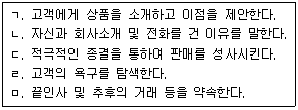
- ㄱ-ㄴ-ㄷ-ㄹ-ㅁ
- ㄴ-ㄹ-ㄱ-ㄷ-ㅁ
- ㄴ-ㄱ-ㄹ-ㄷ-ㅁ
- ㄴ-ㄷ-ㄹ-ㄱ-ㅁ
(정답률: 73%)
3. 기업이 상표전략을 수립하는 경우에는 일반적으로 4가지 선택대안을 가진다. 다음 ( ) 안에 들어갈 가장 알맞은 것은?
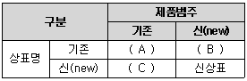
- A - 계열확장, B - 상표확장, C - 복수상표
- A - 복수상표, B - 계열확장, C - 상표확장
- A - 상표확장, B - 복수상표, C - 계열확장
- A - 계열확장, B - 복수상표, C - 상표확장
(정답률: 49%)
4. 제품의 수명주기를 순서대로 올바르게 나열한 것은?
- 도입기 → 성숙기 → 성장기 → 포화기 → 쇠퇴기
- 도입기 → 성장기 → 포화기 → 성숙기 → 쇠퇴기
- 도입기 → 성장기 → 성숙기 → 포화기 → 쇠퇴기
- 도입기 → 성숙기 → 포화기 → 성장기 → 쇠퇴기
(정답률: 82%)
5. 데이터베이스 마케팅에 대한 설명으로 틀린 것은?
- 컴퓨터의 활용가치가 높으며 고객관리를 기초로 한다.
- 고객별로 강화된 정보를 이용하여 장기적인 차원에서 이루어지는 마케팅이다.
- 고객과 접촉하고 기업과 거래할 목적으로 고객 데이터베이스를 구축하고 유지하고 이용하는 과정이다.
- 기업이 고객에 대한 여러 가지 다양한 정보를 컴퓨터를 이용하여 데이터베이스화 한다.
(정답률: 24%)
6. BCG(Boston Consulting Group)의 시장 성장-점유율 매트릭스에서 시장 성장률이 높으나 점유율이 낮은 사업부를 무엇이라 하는가?
- 별(Star)
- 현금젖소(Cash cow)
- 의문표(Question mark)
- 두뇌(Brain)
(정답률: 64%)
7. RFM 분석에 관한 설명으로 틀린 것은?
- RFM 분석은 다이렉트 메일이나 카탈로그 우송리스트 추출에 빈번히 사용되고 있다.
- RFM 분석은 원리가 매우 간단하지만 실제로 높은 반응률을 가져오기 때문에 광범위하게 사용되고 있다.
- RFM 분석을 하기 위해서는 고객과의 거래기록이 전제가 되기 때문에 RFM 분석은 기존고객의 가치를 평가하는 방법이라고 할 수 있다.
- RFM 분석은 거래관계가 없는 잠재고객에 대해서도 직접 적용이 가능하다.
(정답률: 75%)
8. 텔레마케팅의 판매단계를 순서대로 나열한 것은?
- 준비 및 대상자 선정 → 텔레마케팅 전개 및 정보제공 → 고객니즈 파악 → 상담종료 → 분석과 데이터베이스화
- 준비 및 대상자 선정 → 고객니즈 파악 → 텔레마케팅 전개 및 정보제공 → 상담종료 → 분석과 데이터베이스화
- 분석과 데이터베이스화 → 준비 및 대상자 선정 → 고객니즈 파악 → 텔레마케팅 전개 및 정보제공 → 상담종료
- 준비 및 대상자 선정 → 분석과 데이터베이스화 → 고객니즈 파악 → 상담종료 → 텔레마케팅 전개 및 정보제공
(정답률: 60%)
9. 사안에 대한 소비자의 인식이나 태도를 측정하는 척도 중 상반되는 의미의 형용사를 양끝으로 하여 선택하도록 하는 질문의 형태를 이용하는 것은?
- 중요도 척도
- 리커트 척도
- 어의차이 척도
- 스타펠 척도
(정답률: 61%)
10. 텔레마케터의 자질에 대한 설명으로 틀린 것은?
- 텔레마케터는 상당한 인내심을 지니고 있어야 한다.
- 텔레마케터의 건전하고 긍정적이며 적극적인 성격은 매우 중요하다.
- 목소리는 상냥하고 부드러우면서도 힘차고 자신감이 넘쳐 보이도록 해야 한다.
- 텔레마케터는 가능한 경우 콜 시간, 콜 방향을 리드해서는 안 된다.
(정답률: 87%)
11. 다음 소비재 중 가장 강한 상표 애호도를 가지는 것은?
- 편의품
- 선매품
- 전문품
- 원재료
(정답률: 44%)
12. 소비재시장의 세분화 변수 중 인구 통계적 변수에 포함되지 않는 것은?
- 가족규모
- 연령
- 직업
- 라이프스타일
(정답률: 68%)
13. 제품을 판매하거나 서비스를 제공하는 과정에서 다른 제품이나 서비스에 대하여 판매를 유도하고 촉진시키는 마케팅기법은?
- 교차판매
- 유도판매
- 이중판매
- 재판매
(정답률: 62%)
14. 소비자가 제품을 구매하는 의사결정에 있어 외적 정보의 획득 과정과 관여 유형이 바르게 짝지어진 것은?
- 직접적인 지속적 탐색 - 상황적 관여
- 직접적인 구매특이적 탐색 - 지속적 관여
- 비직접적인 구매특이적 탐색 - 상황적 관여
- 수동적 정보 획득 - 고관여
(정답률: 41%)
15. 다음 고객 행동에 따른 구매가능자 중 자사의 제품 서비스에 대하여 필요성을 느끼지 못하거나, 구매할 능력이 없다고 확실하게 판단되는 자는?
- 비자격 잠재자
- 최초구매자
- 구매용의자
- 구매가능자
(정답률: 73%)
16. 주문접수 처리에 요구되는 사항과 거리가 먼 것은?
- 고객번호, 전화번호 등 고객데이터의 정확한 작동과 관리가 이루어져야 한다.
- 고객의 기본이력을 통해 그 고객의 특성을 이해하여 신상정보 DB를 상업적으로 이용한다.
- 문의나 요구사항, 접수에 대해서는 전화를 받는 사람이 즉시 원터치 중심으로 처리할 수 있어야 한다.
- 고객관리에서 가장 기초적인 고객정보 화면의 신규입력과 수정입력이 용이하게 이루어져야 한다.
(정답률: 77%)
17. 마케팅 요소 중 4Ps가 아닌 것은?
- Product
- Person
- Promotion
- Place
(정답률: 72%)
18. 고객 데이터베이스의 설계 및 활용 방안으로 적합하지 않은 것은?
- 고객의 체계적 분류를 실현한다.
- 고객별 DB 반응도를 분석한다.
- 제품별 판매 히스토리를 분석한다.
- 고객 라이프스타일을 분류한다.
(정답률: 51%)
19. 아웃바운드 텔레마케팅 시 고객에게 전화를 할 때 유의할 사항과 거리가 먼 것은?
- 고객에게 전화를 건 목적과 이유를 먼저 설명한다.
- 상품의 기본적인 강점을 먼저 설명하고 부차적인 내용을 설명한다.
- 고객이 구매할 수 있도록 동기부여를 시킬 수 있어야 한다.
- 고객이 구매 결정을 하면 즉시 전화를 끊고 다음 고객 정보를 모니터링하여 전화 준비를 한다.
(정답률: 83%)
20. 제품이 소비자에 의하여 어떤 제품이라고 정의되는 방식을 의미하며, 경쟁 브랜드에 비하여 차별적으로 받아들일 수 있도록 고객들의 마음속에 위치시키는 노력을 의미하는 것은?
- 제품 가격설정
- 제품 포지셔닝
- 제품 브랜딩
- 제품 촉진
(정답률: 79%)
21. 인바운드 상담 시 요구되는 스킬과 거리가 먼 것은?
- 오감의 능력을 총동원하여 고객의 소리를 경청한다.
- 판매를 유도하는 질문은 하지 않는다.
- 고객의 입장에서 말하고 듣는다.
- 자사 상품이 가지고 있는 상품의 장점을 강조한다.
(정답률: 57%)
22. 제품 또는 서비스의 가격결정 시 상대적인 고가전략이 적합한 경우는?
- 시장수요의 가격탄력성이 높을 때
- 원가우위를 확보하고 있어 경쟁기업이 자사 상품의 가격만큼 낮추기 힘들 때
- 시장에 경쟁자의 수가 많을 것으로 예상될 때
- 진입장벽이 높아 경쟁기업의 진입이 어려울 때
(정답률: 63%)
23. 로지스틱스(Logistics) 시스템의 주요기능 중 다음 설명에 해당되는 것은?
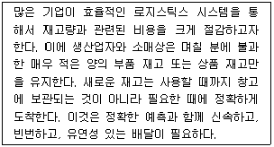
- 공급망 관리 - SCM(Supply Chain Management)
- 적시생산 시스템 - JIT(Just In Time)
- 전자 태그 - RFID(Radio Frequency Identification)
- 고객관계 관리 - CRM(Customer Relationship Management)
(정답률: 58%)
24. 다음 중 유통경로 설계절차가 바른 것은?
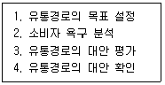
- 1→2→3→4
- 1→2→4→3
- 2→1→4→3
- 2→1→3→4
(정답률: 46%)
25. 다음이 설명하고 있는 것은?
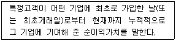
- 고객생애가치
- 기업 이미지
- 상품가치
- 고객산출가치
(정답률: 71%)
2과목: 시장조사
26. 표본의 사례 수가 증가하면 표본은 정규분포를 따르게 되는데 그 이유로 가장 적당한 것은?
- 회귀경향성
- 최소자승의 원리
- 중심극한 정리
- 무선화 원리
(정답률: 50%)
27. 다음이 설명하고 있는 것은?
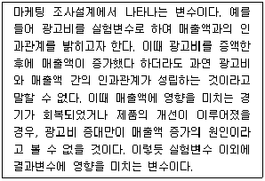
- 독립변수
- 결과변수
- 외생변수
- 종속변수
(정답률: 45%)
28. 마케팅 조사에서 설문의 신뢰성을 높일 수 있는 방법이 아닌 것은?
- 조사원들에 대한 교육을 강화하여 설문을 명확히 이해하도록 하고 질문방식 등을 표준화한다.
- 중요한 질문의 경우 유사한 질문을 이용하여 반복하여 질문을 하고 답을 구한다.
- 설문지의 문항을 은유적인 표현을 많이 사용하여 응답자의 흥미를 유발시킨다.
- 기존의 조사를 통해 신뢰성이 높은 것으로 판명된 설문지 또는 측정항목을 이용한다.
(정답률: 72%)
29. 표본조사의 궁극적 목적으로 가장 적당한 것은?
- 모집단의 특성 추출
- 분산의 산출
- 표본의 평균치 산출
- 표준편차의 산출
(정답률: 53%)
30. 인터넷 설문조사의 특징에 관한 설명으로 틀린 것은?
- 설문응답이 편리하다.
- 표본수가 많아지면 추가비용이 많이 든다.
- 설문에 대한 응답을 빨리 회수할 수 있다.
- 인터뷰 비용 없이 설문응답자와 상호작용할 수 있다.
(정답률: 69%)
31. 텔레마케터가 전화조사를 할 때 응답자가 대답을 회피하거나 답하기가 곤란할 수 있는 경우가 아닌 것은?
- 응답자가 경험한 적이 없거나 오래되어 기억하기 어려운 경우
- 텔레마케터가 너무 사무적이거나 불친절한 경우
- 합법적인 목적이나 취지가 담긴 경우
- 사회적으로 무리가 있는 성이나 기타 민감한 정보를 질문하는 경우
(정답률: 78%)
32. 다음은 1차 자료와 2차 자료를 비교한 것이다. ( ) 안에 들어갈 알맞은 것은?
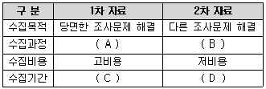
- A - 저관여, B - 고관여, C - 장기, D - 단기
- A - 고관여, B - 저관여, C - 장기, D - 단기
- A - 저관여, B - 저관여, C - 단기, D - 장기
- A - 고관여, B - 고관여, C - 단기, D - 장기
(정답률: 70%)
33. 다음 중 면접자 선정 시 고려해야 할 사항과 가장 거리가 먼 것은?
- 응답자에 접근 용이도
- 면접 목적
- 질문 내용
- 면접의 수행경제력
(정답률: 70%)
34. 다음의 A 은행이 수집하고 있는 자료는?
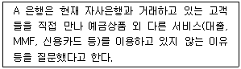
- 설문지 자료
- 2차 자료
- 관찰 자료
- 비확률적 자료
(정답률: 50%)
35. 다음 ( ) 안에 들어갈 알맞은 용어는?
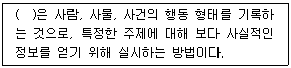
- 관찰
- 분석
- 기능
- 위장
(정답률: 67%)
36. 전화조사에 대한 설명으로 틀린 것은?
- 조사 시간대는 상관없다.
- 질문은 짧고 단순하게 구성하고 질문의 수를 줄인다.
- 중간에 전화가 끊기거나 소음 등에 방해를 받지 않도록 한다.
- 한 가지 주제를 다루는 것이 적당하다.
(정답률: 72%)
37. 다음 중 2차 자료에 해당하지 않는 것은?
- 통계청에서 발간하는 각종 통계자료집
- 각종 연구소에서 발표한 연구보고서
- 실태조사를 통하여 수집한 자료
- 조직 내부에 보유하고 있는 각종 자료
(정답률: 57%)
38. 다음 중 시장조사를 통해 수집된 자료의 처리 순서를 바르게 나열한 것은?
- 편집(editing) → 입력(key - in) → 코딩(coding)
- 코딩(coding) → 편집(editing) → 입력(key - in)
- 편집(editing) → 코딩(coding) → 입력(key - in)
- 입력(key - in) → 코딩(coding) → 편집(editing)
(정답률: 58%)
39. 설문조사 시 별도로 코딩을 하지 않아도 되기 때문에 시간을 절약할 수 있는 조사는?
- 인터넷조사
- 우편조사
- 전화조사
- 방문조사40
(정답률: 63%)
40. 개인의 사생활(privacy)보호와 면접조사가 어려울 때 실시할 수 있는 조사방법으로 가장 적합한 것은?
- 조사원을 이용하여 질문지를 배포하고 우편으로 회수한다.
- 조사원을 이용하여 질문지를 배포하고 전화로 조사한다.
- 우편으로 질문지를 배포하고 전화로 조사한다.
- 조사대상자들을 한 자리에 모아 질문지를 배포하고 전화로 조사한다.
(정답률: 58%)
41. 전화면접법의 장점에 대한 설명으로 맞는 것은?
- 간단한 질문만 가능하다.
- 회답률이 높다.
- 전화소유자에게만 가능하다.
- 많은 비용과 많은 시간이 걸린다.
(정답률: 62%)
42. 측정의 신뢰도와 타당도에 관한 설명으로 틀린 것은?
- 타당도는 측정하고자 하는 개념이나 속성을 정확히 측정하였는가의 정도를 의미한다.
- 신뢰도는 측정치와 실제치가 얼마나 일관성이 있는지를 나타내는 정도이다.
- 타당성이 있는 측정은 항상 신뢰성이 있으며, 신뢰성이 없는 측정은 타당도가 보장되지 않는다.
- 타당도 측정 시 외적타당도보다 내적타당도가 더 중요하다.
(정답률: 57%)
43. 설문지 구성 시 고려사항으로 적절하지 못한 것은?
- 명확성
- 일련번호 부여
- 청각적 효과 활용
- 설문조사 간의 차이 극복
(정답률: 63%)
44. 설문지 구성 시 왜곡된 응답을 줄일 수 있는 설명으로 잘못된 것은?
- 조사자와 응답자 사이에 라포(rapport)가 형성되도록 조사한다.
- 조사 시간을 응답자의 편리한 시간으로 정한다.
- 설문지를 작성할 때 사전 조사를 실시한다.
- 민감한 질문은 서두에 미리 한다.
(정답률: 73%)
45. 응답자들이 전화조사에 응대하는 심리적인 동기요인이 아닌 것은?
- 자신의 의견이나 식견을 표현하고 싶은 욕망
- 사람들과 주고받는 교섭을 즐기는 심리
- 면접자를 돕고 싶은 이타적인 심리
- 사생활 침해에 대한 오인과 자기방어 욕구 심리
(정답률: 72%)
46. 면접조사의 단점에 해당하지 않는 것은?
- 잘 훈련된 면접원이 필요하다.
- 조사 대상이 넓게 분포되어 있으면 비용이 많이 든다.
- 복잡한 질문이 불가능하다.
- 조사원의 개입으로 정보의 왜곡이 있을 수 있다.
(정답률: 66%)
47. 측정도구의 타당도 평가방법에 대한 설명으로 틀린 것은?
- 크론바하 알파값을 산출하여 문항상호 간의 일관성을 측정한다.
- 한 측정치를 기준으로 다른 측정치와의 상관관계를 추정한다.
- 개념타당도는 측정하고자 하는 개념이 실제로 적절하게 측정되었는가를 의미한다.
- 내용타당도는 점수 또는 척도가 일반화하려고 하는 개념을 어느 정도 잘 반영해주는가를 의미한다.
(정답률: 34%)
48. 독립변수와 종속변수의 사이에서 독립변수의 결과인 동시에 종속변수의 원인이 되는 변수는?
- 외적변수
- 선행변수
- 억제변수
- 매개변수
(정답률: 61%)
49. 마케팅 리서치에 대한 설명으로 가장 거리가 먼 것은?
- 마케팅 활동과 관련성이 있어야 한다.
- 미래 예측이 중요하기 때문에 미래의 정보를 수집해야 한다.
- 신뢰할 수 있어야 한다.
- 정확하고 타당성이 있어야 한다.
(정답률: 76%)
50. 다음 척도의 종류는?
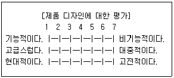
- 서스톤 척도
- 리커트 척도
- 거트만 척도
- 의미분화 척도
(정답률: 57%)
3과목: 텔레마케팅관리
51. 콜센터의 인적자원 관리 방안으로 적합하지 않은 것은?
- 다양한 동기부여 프로그램
- 콜센터 리더 육성 프로그램
- 상담원 수준별 교육훈련 프로그램
- 상담원의 안정을 위한 고정급의 급여체계
(정답률: 71%)
52. 텔레마케터의 사기저하 원인이 아닌 것은?
- 적절한 보상이나 교육훈련이 결핍된 채로 장시간 근무
- 근무환경이 열악하여 일할 의욕 상실
- 텔레마케터 스스로 동기부여 및 애사심을 가질 때
- 동료 간이나 상사와의 인간관계 갈등이 있을 때
(정답률: 74%)
53. 통화 품질 관리자(QAA)의 업무능력과 가장 밀접한 관계가 있는 것은?
- 콜 분배 능력
- 세일즈 능력
- 경청 능력
- 인사관리 능력
(정답률: 50%)
54. 다음이 설명하고 있는 콜센터 리더의 유형으로 옳은 것은?
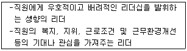
- 지시형 리더
- 지원형 리더
- 참가형 리더
- 위양형 리더
(정답률: 66%)
55. 통화내용의 모니터링 평가요소가 아닌 것은?
- 음성의 친절성
- 업무의 정확성
- 응대의 신속성
- 근무태도의 성실성
(정답률: 64%)
56. 콜센터 운영비용 중 일반적으로 가장 많이 차지하고 있는 것은?
- 인건비
- 통신비
- 시스템 구축비
- 건물 임대비
(정답률: 48%)
57. 다이얼링 기법의 변천사를 바르게 나열한 것은?
- 매뉴얼 다이얼링 → 미리보기 다이얼링 → 프로그레시브 다이얼링 → 예측 다이얼링
- 미리보기 다이얼링 → 매뉴얼 다이얼링 → 예측 다이얼링 → 프로그레시브 다이얼링
- 매뉴얼 다이얼링 → 예측 다이얼링 → 미리보기 다이얼링 → 프로그레시브 다이얼링
- 미리보기 다이얼링 → 프로그레시브 다이얼링 → 매뉴얼 다이얼링 → 예측 다이얼링
(정답률: 44%)
58. 콜센터 조직의 특성으로 적합하지 않은 것은?
- 현재 비정규직, 계약직 중심의 근무형태가 주종을 이루고 있으며, 타 직종에 비하여 이직률이 높은 편이다.
- 정규직과 비정규직 간, 혹은 상담원 간에 보이지 않는 커뮤니케이션 장벽 등이 발생할 확률이 높다.
- 국내의 콜센터 조직은 점차 대형화, 전문화, 시스템화 되어가는 추세이다.
- 콜센터 조직의 가장 큰 특징은 다른 어떤 직종보다 인력이 전문화될 필요가 없다는 것이다.
(정답률: 72%)
59. 콜센터의 조직구성원 중 텔레마케터에 대한 교육훈련 및 성과관리 업무를 주로 수행하는 자는?
- 센터장
- 수퍼바이저
- 통합품질관리사
- OJT 담당자
(정답률: 66%)
60. 텔레마케팅에서 효과적인 코칭의 목적과 가장 거리가 먼 것은?
- 모니터링 결과에 대한 커뮤니케이션
- 텔레마케터의 업무수행능력 강화과정
- 특정부문에 대한 피드백을 제공하고 지도 교정해 가는 과정
- 특정 행동에 대한 감시 감독
(정답률: 75%)
61. 직무중심(job-based) 보상과 역량중심(competency-based) 보상에 관한 설명으로 옳은 것은?
- 직무중심 보상은 지속적인 학습과 개발을 유도한다.
- 역량중심 보상은 인력운영에 있어서 수평적 인력 이동과 같은 유연성이 있다.
- 직무중심 보상은 동일직무에서도 차별적 보상이 가능하다.
- 역량중심 보상은 직무가치에 대한 보상과 객관성 확보가 상대적으로 용이하다.
(정답률: 37%)
62. 다음은 어떤 직무평가방법에 관한 설명인가?
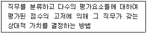
- 점수법(Point rating method)
- 직무분류법(Job claasification method)
- 서열법(Rank method)
- 과업목록분석(Task inventory analysis)
(정답률: 36%)
63. 상담원의 이직원인을 파악하기 위한 방법으로 가장 거리가 먼 것은?
- 시장상황과 비교하여 직무 및 급여 수준 파악
- 상담사와 그룹 미팅 수행
- 공식적인 회의 등 정기적인 의사소통 채널 활용
- 기존 이직 관련 인터뷰 분석
(정답률: 49%)
64. 텔레마케팅의 특성을 가장 잘 설명한 것은?
- 다양한 정보를 효과적으로 제공할 수는 있으나 고객정보 수집은 불가능하다.
- 텔레마케팅은 전화매체를 통한 커뮤니케이션 활동이므로 상담원보다 시스템이 더욱 중요하다.
- 즉시성과 인격성이 있으며, 효과적인 정보제공, 고객관계 구축이 가능하다.
- 텔레마케팅은 데이터베이스 마케팅을 지향하므로 시⋅공간적 제약이 많다.
(정답률: 75%)
65. 통화 품질 관리의 목적으로 가장 적합한 것은?
- 텔레마케터의 사적인 통화 방지
- 텔레마케터가 제대로 통화하는지 감시
- 통화 품질 결과를 텔레마케터의 급여에 반영
- 통화 품질 개선으로 고객에 대한 서비스 향상
(정답률: 74%)
66. 상담 모니터링 평가결과를 가지고 활용할 수 있는 분야가 아닌 것은?
- 통합 품질측정
- 개별 코칭
- 보상과 인정
- 콜 예측
(정답률: 62%)
67. 최근 텔레마케팅 운영의 변화 추세로 틀린 것은?
- 기업이 고정비 부담을 줄이기 위해 자체적으로 텔레마케팅 운영을 확대하고 있다.
- 데이터베이스 시스템 구축으로 고객정보를 활용하여 적극적인 판촉활동을 전개하여 생산성과 수익실현에 초점을 둔다.
- 인바운드와 아웃바운드를 동시에 운영하고 실무자의 효율성과 생산성을 높이고 있는 추세이다.
- 콜센터를 중심으로 전용상품을 개발하여 판매활동을 강화하고 있다.
(정답률: 26%)
68. 변화를 성공적으로 주도하기 위해 변화가 일어날 수 있도록 추진하는 인사관리자의 역할은?
- 설계자
- 입증자
- 중재자
- 촉진자
(정답률: 63%)
69. 인바운드 스크립트에 대한 설명으로 가장 거리가 먼 것은?
- 고객 주도형으로 정형적인 스크립트를 작성하는 것이 비교적 쉽다.
- 상품의 판매나 주문으로 결부시켜가는 것이 비교적 쉽다.
- 기업의 이미지 향상 및 고객 만족 향상에 크게 공헌할 수 있다.
- 인바운드 스크립트는 주어진 상황을 잘 반영해야 한다.
(정답률: 30%)
70. 콜센터 리더의 능력으로 옳지 않은 것은?
- 직원 교육훈련 능력 및 마케팅 전략 수립능력
- 끊임없는 자기개발 및 원만한 인간관계
- 해당업무에 대한 지식과 변화에 따른 유연한 사고방식
- 상담원의 승진 인사에 대한 주관적인 판단 및 통솔력
(정답률: 70%)
71. 콜센터의 특징에 대한 설명으로 가장 거리가 먼 것은?
- 고객 접촉이 용이하다.
- 고객의 니즈를 파악하고 대응하는 고객 상황 대응센터이다.
- 주로 전화 중심으로 업무를 수행한다.
- 신규고객 위주의 관계개선센터 역할을 한다.
(정답률: 67%)
72. 텔레마케팅센터에서 재택근무자를 운영할 경우 장점이라고 할 수 없는 것은?
- 직원 관리가 용이하다.
- 우수 직원을 유인하고 유지할 수 있다.
- 기상악화 등으로 인한 위험 요소를 감소시킨다.
- 설비비용을 절약할 수 있다.
(정답률: 63%)
73. 다음 아웃바운드 상담 흐름도에서 ( ) 안에 들어갈 알맞은 것은?
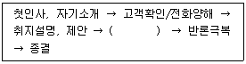
- 고객만족도 측정
- 고객욕구 탐색
- 고객이미지 형성
- 결과 재검토
(정답률: 68%)
74. 상담을 하는 상황이나 대응하는 상담원, 또는 어떤 경로로 상담이 이루어졌는지 등에 따라 상담 난이도가 달라지는데, 다음 중 상담 난이도에 관한 설명으로 옳지 않은 것은?
- 상담 난이도는 상담시간이나 상담횟수 등의 정량적 측도로 측정한다.
- 상담 난이도는 상담원의 경험과 기술 수준에 따라 정성적으로 분류한다.
- 상담 난이도는 상황에 따라 유동적이나 코드별 분류보다 수준별 분류가 적절하다.
- 상담 난이도는 고객의 상담 난이도를 예측하여 적절한 상담원에게 연결해야 한다.
(정답률: 45%)
75. 텔레마케터 선발 시 면접방법으로 가장 거리가 먼 것은?
- 그룹 면접
- 스크립트 개발 테스트
- 전산능력
- 음성테스트
(정답률: 40%)
4과목: 고객응대
76. 텔레마케팅 고객응대의 특징이 아닌 것은?
- 쌍방 간 커뮤니케이션이 필요하다.
- 비대면 중심의 커뮤니케이션이다.
- 언어적인 메시지와 비언어적인 메시지를 동시에 사용한다.
- 고객응대 시 발생한 상황에 대해 영향을 받지 않는다.
(정답률: 69%)
77. 고객 응대에 있어서 Moment Of Truth(결정적 순간, 진실의 순간)의 의미로 가장 적합한 것은?
- 고객이 제품을 구매하여 처음 사용해 보는 순간
- 고객이 제품 사용을 통해 제품의 장⋅단점을 실제로 깨달은 순간
- 고객과 기업이 상호 접촉하여 커뮤니케이션을 하는 매 순간
- 고객이 만족할 만한 응대가 끝난 시점
(정답률: 48%)
78. 기업이 고객의 불평불만업무를 효율적으로 처리하기 위해 지켜야 할 사항이 아닌 것은?
- 불평불만을 담당하는 부서에 고객이 접근하기 용이하게 해야 한다.
- 고객에게 업무처리 절차에 대한 홍보가 잘 되어 있어야 한다.
- 고객의 불평불만을 상담한 직원 뿐 아니라 관련 직원들도 처리절차 및 결과를 함께 인지해야 한다.
- 상담원이 주관적으로 즉시 처리할 수 있도록 한다.
(정답률: 70%)
79. 성공적인 대화를 위해서는 말하기와 듣기가 순차적으로 반복되면서 상호 간 의사 전달이 되어야 한다는 원리는?
- 순환의 원리
- 협력의 원리
- 적절성의 원리
- 말하기의 원리
(정답률: 61%)
80. 텔레마케터가 고객의 욕구를 정확히 파악하고 고객의 불만사항을 신속하게 해결하기 위한 방법으로 가장 적합한 것은?
- 고객이 사용하는 사투리, 속어 등을 사용함으로써 보다 친근하고 신속하게 응대한다.
- 고객의 욕구를 정확히 파악하기 위해서는 고객의 이야기 도중에 질문한다.
- 전달력을 높이기 위해 음성의 변화(음성의 고저, 장단, 강약 등) 없이 말한다.
- 고객의 정확한 이해를 위해 통화의 끝부분에서 중요부분을 요약하여 전달한다.
(정답률: 68%)
81. 불만을 제기한 고객의 심리 상태로 가장 거리가 먼 것은?
- 비이성적이다.
- 감정적이며 요구조건이 많다.
- 객관적이며 냉정하다.
- 본인의 의견이 반영되길 원한다.
(정답률: 70%)
82. 커뮤니케이션의 특성으로 옳지 않은 것은?
- 의사소통 수단의 고정화
- 정보교환과 의미부여
- 순기능과 역기능의 존재
- 오류와 장애의 발생 가능성 존재
(정답률: 70%)
83. 커뮤니케이션 활동을 저해하는 요소가 아닌 것은?
- 왜곡 및 생략
- 준거 틀의 차이
- 적절한 양의 커뮤니케이션
- 수용성과 타이밍
(정답률: 72%)
84. CRM을 위한 기업의 마케팅 커뮤니케이션 방식으로 적합하지 않은 것은?
- 통합적 마케팅 커뮤니케이션
- 매스미디어상의 브로드캐스팅광고
- 광고와 실 판매의 기능을 포괄하는 커뮤니케이션
- 프로모션의 효율성과 효과성을 제고할 수 있는 커뮤니케이션
(정답률: 65%)
85. 소비자 단체에서의 상담순서에 있어 가장 먼저 해야 할 사항은?
- 접수 시 해결 가능한 소비자 문제인지 확인한다.
- 접수를 받아 기본 사항을 상담카드에 기록한다.
- 상담 사건을 분류한다.
- 상담과정에 필요한 경우 시험이나 검사를 의뢰한다.
(정답률: 45%)
86. 다음 설명에 해당하는 고객응대 요소는?
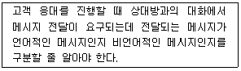
- 대화의 예절
- 대화의 목적
- 대화의 내용
- 대화의 상대
(정답률: 57%)
87. 텔레마케터가 전화응대 시 두려움을 갖는 이유로 가장 거리가 먼 것은?
- 외모에 대한 콤플렉스
- 상담기술 능력에 대한 자신감 결여
- 상품, 서비스 지식 부족
- 거절에 대한 불안감
(정답률: 77%)
88. 커뮤니케이션에 관한 설명으로 가장 옳은 것은?
- 커뮤니케이션은 단시간 반복되는 일련의 행위이다.
- 커뮤니케이션은 사람들이 서로의 정보, 생각, 느낌 등을 공유하기 위한 활동이다.
- 상대방과 어떠한 관계에 있느냐와 관계없이 주고받는 내용이나 전달방식이 일정해야만 한다.
- 커뮤니케이션은 일방적인 활동이다.
(정답률: 74%)
89. 다음 중 개방형 질문에 관한 설명으로 틀린 것은?
- 개방형 질문은 비교적 상담 후반에 사용하는 것이 효과적이다.
- 개방형 질문은 답변하는 사람에 따라 말의 내용과 말의 양이 달라진다.
- 고객으로부터 많은 의견과 정보를 기대할 수 있다.
- 개방형 질문에 대한 고객의 답변에 이어 필요하다면 다른 내용을 추가로 질문함으로써 고객의 욕구를 명확하게 파악할 수 있게 된다.
(정답률: 63%)
90. 성공적인 상담진행을 위한 의사소통 전략으로 가장 거리가 먼 것은?
- 소비자의 이름을 사용한다.
- 길고 기술적인 단어를 사용하여 전문성을 높인다.$
- 긍정적인 내용은 “나” 혹은 “우리”라는 메시지를 사용한다.
- 대화내용에 대한 피드백을 주고받는다.
(정답률: 72%)
91. CRM의 목적에 해당하지 않는 것은?
- 고객 충성도 강화
- 획일화된 서비스 제공
- 양질의 고객정보 축적
- 우량고객 확보
(정답률: 59%)
92. CRM에 대한 설명으로 적절치 않은 것은?
- 고객 관계 관리를 의미한다.
- 고객 통합 DB를 구축하고 분석⋅활용한다.
- 고객지향적인 경영기법의 하나이다.
- 단기적인 신뢰구추에 의미를 부여한다.
(정답률: 72%)
93. 전화 상담에서 필요한 말하기 기법에 관한 설명으로 틀린 것은?
- 전화로 이야기할 때에도 미소를 지으며, 필요한 낱말에 강세를 두어 말한다.
- 어조를 과장하여 억양에 변화를 주는 것은 소비자의 집중력을 약화시키므로 바람직하지 않다.
- 소비자가 말하는 속도에 보조를 맞추되, 상담원은 되도록 천천히 말하는 습관을 갖는 것이 좋다.
- 명확한 발음을 하기 위해 큰소리로 반복해서 연습하는 것이 필요하다.
(정답률: 60%)
94. 고객유형별 특징에 대한 설명으로 적합하지 않은 것은?
- 반말형은 도도하고 거칠며 잘난 척한다.
- 호인형은 사귀기가 쉽고 쾌할하다.
- 깍쟁이형은 성격이 활발하고 친숙하다.
- 신경질형은 성격이 급하며 남을 무시한다.
(정답률: 70%)
95. 고객이 텔레마케터에게 듣고 싶어 하는 상담내용으로 가장 거리가 먼 것?
- 고객 자신에게 간접적인 이익이 되는 내용
- 고객이 이해할 수 있고 의사결정에 도움이 되는 내용
- 고객 불만이나 요구사항에 대한 해결방안에 대한 내용
- 고객의 입장에서 독특하다고 느낄 수 있는 내용
(정답률: 32%)
96. 고객응대 시 고객의 반론을 극복하기 위한 적절한 설득이 아닌 것은?
- 거절이나 반론에 대한 두려움을 없앤다.
- 고객니즈를 집중적으로 분석하여 관심을 유도한다.
- 인간적인 신뢰성으로 설득한다.
- 고객이 원하는 상품을 무료로 지급한다.
(정답률: 80%)
97. 다음 중 연세가 많은 고객에 대한 효과적인 상담기법과 가장 거리가 먼 것은?
- 호칭에 신경을 쓰도록 한다.
- 공손하게 응대하고 질문에 정중하게 답한다.
- 순발력 있고 빠른 속도로 응대한다.
- 고객의 의견을 존중한다.
(정답률: 74%)
98. 대인커뮤니케이션의 구성 요소로 옳지 않은 것은?
- 기호화와 해독
- 발신자와 수신자
- 상품과 유통
- 메시지와 채널
(정답률: 54%)
99. 시대가 변하면서 마케팅에 대한 개념도 변화하였다. 다음 중 고객 개인별로 상품설계, 가격체계, 판매채널, 프로모션, 서비스를 제공하는 마케팅은?
- 다품종소량 마케팅
- 세분화 마케팅
- 일대일 마케팅
- 틈새 마케팅
(정답률: 61%)
100. 고객의 과거 구매경력과 행동특성을 체크하고 기존 제품 중심으로 화제를 유도하면서 고정고객의 우대혜택을 설명했을 때 가장 효과적인 고객은?
- 불만 고객
- 신규 고객
- 기존 고객으로서 자사 상품에 관심이 많은 고객
- 막연한 기대감을 가진 고객
(정답률: 68%)